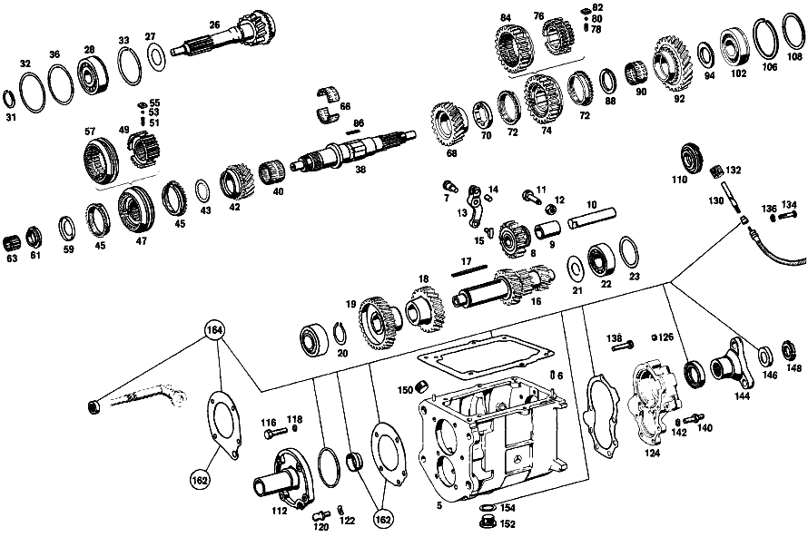

| № | Артикул | Название | Кол. | Примечание | Ограничение |
|---|---|---|---|---|---|
| 5 | A 111 260 02 11 | КОРПУС КП | 1 | Коробка передач [001] UP TO TRANSMISSION 044 001193 | |
| 6 | N 000007 006205 | - Цилиндрический штифт | 2 | Коробка передач | |
| 7 | A 111 262 00 74 | - Палец | 1 | РЫЧАГ ПРОМЕЖУТОЧНЫЙ Коробка передач | |
| 8 | A 120 260 03 25 | Шестерня заднего хода | 1 | Коробка передач | |
| 9 | A 120 263 03 50 | - втулка | 1 | Коробка передач | |
| 10 | A 186 263 00 30 | Ось шестерни заднего хода | 1 | Коробка передач | |
| 11 | A 110 990 01 10 | БОЛТ | 1 | Коробка передач | |
| 12 | N 000934 010005 | Гайка | - | Коробка передач | |
| 12 | N 304032 010003 | Шестигранная гайка | 1 | M10 Коробка передач | |
| 13 | A 136 260 00 37 | РЫЧАГ | 1 | Коробка передач | |
| 14 | N 900037 008104 | - Установочный штифт | 1 | Коробка передач | |
| 15 | A 121 263 01 23 | Скользящая муфта | 1 | Коробка передач | |
| 16 | A 113 263 00 02 | ПРОМЕЖУТОЧНЫЙ ВАЛ | - | Коробка передач | |
| 16 | A 113 263 01 02 | ПРОМЕЖУТОЧНЫЙ ВАЛ | - | Коробка передач | |
| 16 | A 113 263 02 02 | ПРОМЕЖУТОЧНЫЙ ВАЛ | 1 | Коробка передач | |
| 16 | A 111 263 04 02 | ПРОМЕЖУТОЧНЫЙ ВАЛ | 1 | Коробка передач | |
| 16 | A 110 263 09 02 | Промвал коробки передач | 1 | Коробка передач | |
| 16 | A 111 263 05 02 | ПРОМЕЖУТОЧНЫЙ ВАЛ | 1 | Коробка передач | |
| 17 | A 186 991 03 68 | Призматическая шпонка | 1 | Коробка передач | |
| 18 | A 111 263 00 13 | Шестерня | 1 | ТРЕТЬЯ ПЕРЕДАЧА Коробка передач | |
| 19 | A 180 263 04 10 | ШЕСТЕРНЯ | 1 | ЧЕТВЁРТАЯ ПЕРЕДАЧА Коробка передач | |
| 19 | A 111 263 00 10 | Шестерня | 1 | ЧЕТВЁРТАЯ ПЕРЕДАЧА Коробка передач | |
| 20 | N 900055 035300 | Стопорное кольцо | 1 | Коробка передач [402] БОЛЬШЕ НЕ ПОСТАВЛЯЕТСЯ | |
| 21 | A 186 990 18 40 | Диск | 1 | Коробка передач | |
| 22 | N 000625 036305 | Шарикоподшипник | - | Коробка передач | |
| 22 | A 001 981 71 25 | ШАРИКОПОДШИПНИК | - | Коробка передач | |
| 22 | A 004 981 42 01 | Подшипник с цил. роликами | 2 | Коробка передач | |
| 23 | A 120 263 08 52 | Компенсационная шайба | 1 | ПО НЕОБХОДИМОСТИ 1.00 MM Коробка передач | |
| 23 | A 120 263 14 52 | Компенсационная шайба | - | Коробка передач | |
| 23 | A 602 263 02 52 | Дистанционная шайба | 1 | ПО НЕОБХОДИМОСТИ 0.10 MM Коробка передач [402] БОЛЬШЕ НЕ ПОСТАВЛЯЕТСЯ | |
| 23 | A 120 263 15 52 | РАСПОРНАЯ ШАЙБА | - | Коробка передач | |
| 23 | A 602 263 03 52 | Дистанционная шайба | 1 | ПО НЕОБХОДИМОСТИ 0.25 MM Коробка передач [402] БОЛЬШЕ НЕ ПОСТАВЛЯЕТСЯ | |
| 23 | A 120 263 16 52 | Дистанционная шайба | - | Коробка передач | |
| 23 | A 602 263 04 52 | Дистанционная шайба | 1 | ПО НЕОБХОДИМОСТИ 0.50 MM Коробка передач | |
| 26 | A 112 260 05 20 | ПРИВОДНОЙ ВАЛ | 1 | Коробка передач | |
| 26 | A 111 260 13 20 | Приводной вал | 1 | с SYNCHRONIZING CONE Коробка передач | |
| 27 | A 186 262 00 66 | Маслозащитное кольцо | 1 | Коробка передач | |
| 28 | N 000625 606306 | Шарикоподшипник | - | Коробка передач | |
| 28 | A 002 981 06 25 | ШАРИКОПОДШИПНИК | 1 | Коробка передач | |
| 28 | A 001 981 32 25 | Шарикоподшипник | 1 | Коробка передач | |
| 31 | A 136 262 00 94 | Пруж. стопорное кольцо | - | Коробка передач | |
| 31 | A 123 262 04 94 | Пруж. стопорное кольцо | 1 | Коробка передач | |
| 32 | A 186 262 04 51 | Проставочное кольцо | 1 | Коробка передач | |
| 33 | A 136 994 06 35 | Пруж. стопорное кольцо | 1 | ПО НЕОБХОДИМОСТИ 1.90 MM Коробка передач | |
| 33 | A 136 994 07 35 | СТОПОРН. КОЛЬЦО | - | Коробка передач | |
| 33 | A 136 994 09 35 | Пруж. стопорное кольцо | 1 | ПО НЕОБХОДИМОСТИ 2.00 MM Коробка передач | |
| 36 | A 136 262 06 52 | Компенсационная шайба | NB | ПО НЕОБХОДИМОСТИ 0.10 MM Коробка передач | |
| 36 | A 136 262 07 52 | Компенсационная шайба | NB | ПО НЕОБХОДИМОСТИ 0.20 MM Коробка передач | |
| 36 | A 136 262 08 52 | Компенсационная шайба | NB | ПО НЕОБХОДИМОСТИ 0.30 MM Коробка передач | |
| 38 | A 180 262 01 05 | Вторичный вал | 1 | Коробка передач | |
| 40 | A 000 981 29 12 | СЕПАРАТОР ИГОЛЬЧ. ПОДШ. | 1 | Коробка передач | |
| 42 | A 111 260 03 44 | Цил. косозубая шестерня | 1 | с SYNCHRONIZING CONE Коробка передач | |
| 43 | A 120 262 23 62 | Упорная шайба | 1 | Коробка передач | |
| 45 | A 319 262 00 34 | КОЛЬЦО СИНХРОНИЗАТОРА | - | Коробка передач | |
| 45 | A 111 262 01 34 | КОЛЬЦО СИНХРОНИЗАТОРА | - | Коробка передач | |
| 45 | A 113 262 00 34 | Кольцо синхронизатора | 2 | ТРЕТЬЯ И ЧЕТВЁРТАЯ ПЕРЕДАЧА Коробка передач | |
| 47 | A 111 260 08 45 | Корпус синхронизатора | 1 | ТРЕТЬЯ И ЧЕТВЁРТАЯ ПЕРЕДАЧА Коробка передач | |
| 49 | A 111 262 04 35 | - Корпус синхронизатора | 1 | Коробка передач [417] БОЛЬШЕ НЕ ПОСТАВЛЯЕТСЯ, ЗАКАЗЫВАТЬ КОМПЛЕКТ ПОСТАВКИ | |
| 51 | A 180 993 41 01 | - пружина | 3 | Коробка передач | |
| 53 | N 005401 306500 | - Шар | 3 | 6.5mm Коробка передач | |
| 55 | A 121 262 00 40 | - Поводок | 3 | Коробка передач | |
| 57 | A 111 262 04 23 | - СКОЛЬЗ. МУФТА СИНХРОНИЗ. | - | ТРЕТЬЯ И ЧЕТВЁРТАЯ ПЕРЕДАЧА Коробка передач [402] БОЛЬШЕ НЕ ПОСТАВЛЯЕТСЯ | |
| 59 | A 120 994 01 15 | Стопорная шайба | 1 | ВТОРИЧНЫЙ ВАЛ, СПЕРЕДИ Коробка передач | |
| 61 | A 120 262 03 26 | Шлицевая гайка | 1 | ВТОРИЧНЫЙ ВАЛ, СПЕРЕДИ Коробка передач | |
| 63 | A 000 981 08 12 | СЕПАРАТОР ИГОЛЬЧ. ПОДШ. | - | Коробка передач | |
| 63 | A 000 981 09 12 | СЕПАРАТОР ИГОЛЬЧ. ПОДШ. | - | Коробка передач | |
| 63 | A 000 981 37 12 | СЕПАРАТОР ИГОЛЬЧ. ПОДШ. | - | Коробка передач | |
| 63 | A 000 981 63 12 | СЕПАРАТОР ИГОЛЬЧ. ПОДШ. | - | Коробка передач | |
| 63 | A 002 981 34 12 | Сепаратор роликоподш. | 1 | Коробка передач | |
| 66 | A 120 981 03 12 | Сепаратор роликоподш. | 1 | Коробка передач | |
| 68 | A 111 262 04 12 | ШЕСТЕРНЯ | - | Коробка передач | |
| 68 | A 110 262 02 12 | ШЕСТЕРНЯ | 1 | Коробка передач | |
| 68 | A 110 262 04 12 | ШЕСТЕРНЯ | 1 | 35 TEETH; 2ND SPEED Коробка передач | |
| 68 | A 111 262 06 12 | ШЕСТЕРНЯ | 1 | Коробка передач | |
| 70 | A 120 262 16 62 | ШАЙБА УПОРНАЯ | 1 | ПО НЕОБХОДИМОСТИ 7.90 MM Коробка передач | |
| 70 | A 120 262 17 62 | ШАЙБА УПОРНАЯ | - | ||
| 70 | A 120 262 18 62 | ШАЙБА УПОРНАЯ | 1 | ПО НЕОБХОДИМОСТИ 8.00 MM Коробка передач | |
| 70 | A 120 262 19 62 | ШАЙБА УПОРНАЯ | - | ||
| 70 | A 120 262 20 62 | Упорная шайба | 1 | ПО НЕОБХОДИМОСТИ 8.10 MM Коробка передач | |
| 72 | A 319 262 00 34 | КОЛЬЦО СИНХРОНИЗАТОРА | - | ||
| 72 | A 111 262 01 34 | КОЛЬЦО СИНХРОНИЗАТОРА | - | ||
| 72 | A 113 262 00 34 | Кольцо синхронизатора | 2 | ПЕРВАЯ И ВТОРАЯ ПЕРЕДАЧА Коробка передач | |
| 74 | A 111 260 07 45 | СИНХРОНИЗАТОР | 1 | ПЕРВАЯ И ВТОРАЯ ПЕРЕДАЧА Коробка передач | |
| 74 | A 111 260 09 45 | Корпус синхронизатора | 1 | ПЕРВАЯ И ВТОРАЯ ПЕРЕДАЧА Коробка передач | |
| 76 | A 111 262 03 35 | - СИНХРОНИЗАТОР | 1 | Коробка передач | |
| 76 | A 111 262 06 35 | - СИНХРОНИЗАТОР | 1 | Коробка передач [402] БОЛЬШЕ НЕ ПОСТАВЛЯЕТСЯ | |
| 78 | A 180 993 41 01 | - пружина | 3 | Коробка передач | |
| 80 | N 005401 306500 | - Шар | 3 | 6.5mm Коробка передач | |
| 82 | A 121 262 00 40 | - Поводок | 3 | Коробка передач | |
| 84 | A 111 262 03 23 | СКОЛЬЗ. МУФТА СИНХРОНИЗ. | 1 | Коробка передач [417] БОЛЬШЕ НЕ ПОСТАВЛЯЕТСЯ, ЗАКАЗЫВАТЬ КОМПЛЕКТ ПОСТАВКИ | |
| 84 | A 111 262 06 23 | - СКОЛЬЗ. МУФТА СИНХРОНИЗ. | 1 | Коробка передач [402] БОЛЬШЕ НЕ ПОСТАВЛЯЕТСЯ | |
| 86 | A 120 262 00 81 | Вставной клин | 1 | Коробка передач | |
| 88 | A 120 262 11 62 | Упорная шайба | 1 | ПО НЕОБХОДИМОСТИ 4.40 MM Коробка передач | |
| 88 | A 120 262 12 62 | ШАЙБА УПОРНАЯ | - | ||
| 88 | A 120 262 13 62 | Упорная шайба | 1 | ПО НЕОБХОДИМОСТИ 4.50 MM Коробка передач | |
| 88 | A 120 262 14 62 | ШАЙБА УПОРНАЯ | - | ||
| 88 | A 120 262 15 62 | Упорная шайба | 1 | ПО НЕОБХОДИМОСТИ 4.60 MM Коробка передач | |
| 90 | A 120 981 02 12 | СЕПАРАТОР ИГОЛЬЧ. ПОДШ. | - | ||
| 90 | A 001 981 69 10 | Игольчатый подшипник | 1 | ПЕРВАЯ ПЕРЕДАЧА Коробка передач | |
| 92 | A 113 262 00 11 | ШЕСТЕРНЯ | 1 | ПЕРВАЯ ПЕРЕДАЧА Коробка передач | |
| 92 | A 113 262 01 11 | ШЕСТЕРНЯ | 1 | ПЕРВАЯ ПЕРЕДАЧА Коробка передач | |
| 92 | A 110 262 03 11 | ШЕСТЕРНЯ | - | Коробка передач | |
| 92 | A 110 260 00 19 | Цил. косозубая шестерня | 1 | ПЕРВАЯ ПЕРЕДАЧА Коробка передач | |
| 92 | A 186 262 08 62 | Упорная шайба | 1 | ПО НЕОБХОДИМОСТИ 4.50 MM Коробка передач | |
| 94 | A 186 262 01 62 | Упорная шайба | 1 | ПО НЕОБХОДИМОСТИ 3.80 MM Коробка передач | |
| 94 | A 186 262 02 62 | Упорная шайба | 1 | ПО НЕОБХОДИМОСТИ 3.90 MM Коробка передач | |
| 94 | A 186 262 03 62 | Упорная шайба | 1 | ПО НЕОБХОДИМОСТИ 4.00 MM Коробка передач | |
| 94 | A 186 262 04 62 | ШАЙБА УПОРНАЯ | 1 | ПО НЕОБХОДИМОСТИ 4.10 MM Коробка передач | |
| 94 | A 186 262 05 62 | Упорная шайба | 1 | ПО НЕОБХОДИМОСТИ 4.20 MM Коробка передач | |
| 94 | A 186 262 06 62 | ШАЙБА УПОРНАЯ | 1 | ПО НЕОБХОДИМОСТИ 4.30 MM Коробка передач | |
| 94 | A 186 262 07 62 | Упорная шайба | 1 | ПО НЕОБХОДИМОСТИ 4.40 MM Коробка передач | |
| 102 | A 136 981 02 25 | ШАРИКОПОДШИПНИК | - | Коробка передач | |
| 102 | A 002 981 07 25 | Рад. шарикоподшипник | 1 | Коробка передач | |
| 106 | N 005417 072000 | Пруж. стопорное кольцо | - | Коробка передач | |
| 106 | N 005417 072001 | Пруж. стопорное кольцо | 1 | Коробка передач | |
| 108 | A 136 262 04 52 | Компенсационная шайба | 1 | ПО НЕОБХОДИМОСТИ 0.10 MM Коробка передач | |
| 108 | A 136 262 05 52 | Компенсационная шайба | 1 | ПО НЕОБХОДИМОСТИ 0.20 MM Коробка передач | |
| 108 | A 136 262 09 52 | Компенсационная шайба | 1 | ПО НЕОБХОДИМОСТИ 0.30 MM Коробка передач | |
| 110 | A 120 264 08 30 | ПРИВОДНАЯ ШЕСТЕРНЯ | - | Коробка передач | |
| 110 | A 110 264 00 30 | Ведущее колесо | 1 | СПИДОМЕТР Коробка передач | |
| 112 | A 111 260 06 21 | КРЫШКА КОРПУСА | 1 | Коробка передач | |
| 112 | A 111 260 07 21 | КРЫШКА КОРПУСА | - | ||
| 112 | A 111 260 08 21 | КРЫШКА КОРПУСА | 1 | СПЕРЕДИ Коробка передач | |
| 116 | N 000931 008046 | Винт | - | Коробка передач | |
| 116 | N 304017 008018 | Винт с 6-гранной головкой | 4 | TRANSMISSION CASE FRONT COVER TO TRANSMISSION CASE; M8X35 Коробка передач | |
| 118 | N 000137 008202 | Пружинная шайба | - | Коробка передач | |
| 118 | N 000137 008204 | Пружинная шайба | - | Коробка передач | |
| 118 | N 000137 008212 | Пружинная шайба | 4 | TRANSMISSION CASE FRONT COVER TO TRANSMISSION CASE Коробка передач | |
| 120 | A 111 991 00 15 | Шаровой палец | 1 | ВИЛКА ВЫЖИМНАЯ Коробка передач | |
| 122 | N 000137 010201 | Пружинная шайба | 1 | Коробка передач | |
| 124 | A 111 260 04 16 | Крышка корпуса | 1 | СЗАДИ Коробка передач | |
| 126 | A 153 264 00 55 | - Пробка | 1 | Коробка передач | |
| 130 | A 111 264 00 32 | Вал | 1 | ПРИВОД СПИДОМЕТРА Коробка передач | |
| 132 | A 120 264 02 31 | Ведущее колесо | - | Коробка передач | |
| 132 | A 115 260 06 48 | ПРИВОДНАЯ ШЕСТЕРНЯ | 1 | ПРИВОД СПИДОМЕТРА Коробка передач | |
| 134 | N 000931 006021 | БОЛТ | - | Коробка передач | |
| 134 | N 000933 006194 | Винт | 1 | Коробка передач | |
| 136 | N 000137 006200 | Пружинная шайба | - | Коробка передач | |
| 136 | N 000137 006204 | Пружинная шайба | 1 | Коробка передач | |
| 138 | N 000931 008046 | Винт | - | Коробка передач | |
| 138 | N 304017 008018 | Винт с 6-гранной головкой | 3 | M8X35 Коробка передач | |
| 140 | A 110 990 00 10 | БОЛТ | 4 | Коробка передач | |
| 142 | N 000137 008202 | Пружинная шайба | - | ||
| 142 | N 000137 008204 | Пружинная шайба | - | Коробка передач | |
| 142 | N 000137 008212 | Пружинная шайба | 7 | Коробка передач | |
| 144 | A 111 262 00 45 | Фланец | 1 | Коробка передач | |
| 146 | A 186 262 01 73 | предохранитель | 1 | Коробка передач | |
| 148 | A 186 262 02 26 | Шлицевая гайка | 1 | Коробка передач | |
| 150 | A 186 997 00 32 | ЗАГЛУШКА РЕЗЬБОВАЯ | 1 | ЗАПРАВКА МАСЛА; M24X1,5 Коробка передач | |
| 152 | A 186 997 01 32 | ЗАГЛУШКА РЕЗЬБОВАЯ | - | Коробка передач | |
| 152 | A 094 997 24 00 | Резьбовая пробка | 1 | Коробка передач | |
| 152 | A 094 997 24 00 | Резьбовая пробка | - | Коробка передач | |
| 152 | A 210 997 01 32 | Резьбовая пробка | 1 | СЛИВ МАСЛА Коробка передач | |
| 154 | N 007603 024105 | Уплотнительное кольцо | 1 | СЛИВ МАСЛА Коробка передач | |
| 164 | A 113 586 00 26 | РЕМКОМПЛЕКТ | 1 | ДЛЯ КП Коробка передач | |
| 166 | A 113 260 01 14 | КРЫШКА КОРПУСА | 1 | Коробка передач | |
| 166 | A 113 260 02 14 | КРЫШКА КОРПУСА | 1 | СВЕРХУ Коробка передач | |
| 168 | A 198 260 09 14 | - КРЫШКА КОРПУСА | 1 | Коробка передач | |
| 170 | A 136 265 02 47 | - Палец | 2 | Коробка передач | |
| 172 | A 153 992 00 05 | - втулка | 1 | Коробка передач | |
| 174 | A 136 265 00 48 | - Запор | 1 | Коробка передач | |
| 176 | A 136 265 00 93 | - пружина | 1 | Коробка передач | |
| 178 | A 136 997 08 30 | - Резьбовая пробка | 1 | Коробка передач | |
| 180 | A 113 267 00 03 | - ВАЛ ПЕРЕКЛЮЧЕНИЯ | - | Коробка передач | |
| 180 | A 113 260 00 38 | - ВАЛ | 1 | Коробка передач | |
| 182 | N 006503 014100 | - УПЛОТНИТ. КОЛЬЦО | 1 | Коробка передач | |
| 184 | A 198 268 00 33 | - КУЛАЧОК ПЕРЕКЛЮЧЕНИЯ | 1 | Коробка передач | |
| 186 | A 120 990 13 20 | - болт | 1 | Коробка передач | |
| 188 | N 000127 007201 | - Пружинное кольцо | - | Коробка передач | |
| 188 | N 912004 007100 | - Пружинное кольцо | 1 | Коробка передач | |
| 190 | A 198 268 05 23 | - ГОЛОВКА ВИЛКИ | 1 | Коробка передач | |
| 192 | A 198 267 01 83 | - УПЛОТНИТЕЛЬ | - | Коробка передач | |
| 192 | A 111 267 00 83 | - УПЛОТНИТЕЛЬ | 2 | Коробка передач | |
| 194 | A 198 268 03 74 | - БОЛТ | - | Коробка передач | |
| 194 | A 111 267 00 74 | - БОЛТ | 1 | Коробка передач | |
| 196 | N 000934 007001 | - Гайка | - | Коробка передач | |
| 196 | A 001 990 01 51 | - ГАЙКА | 1 | Коробка передач | |
| 198 | A 198 260 00 28 | - ПЛАСТИНА НАПРАВЛЯЮЩАЯ | 1 | Коробка передач | |
| 200 | A 136 265 00 74 | - БОЛТ | 1 | Коробка передач | |
| 202 | A 136 265 02 93 | - ПРУЖИНА НАЖИМНАЯ | 1 | Коробка передач | |
| 204 | N 000660 004002 | - ЗАКЛЕПКА | - | Коробка передач | |
| 204 | N 910006 004043 | - Заклепка | 1 | Коробка передач | |
| 206 | A 136 990 82 40 | - Диск | 2 | Коробка передач | |
| 208 | N 900055 008000 | - Пружинная шайба | - | Коробка передач | |
| 208 | N 900055 008002 | - Пружинная шайба | 2 | Коробка передач | |
| 210 | A 136 265 02 72 | - гайка | 2 | Коробка передач | |
| 212 | A 186 265 00 01 | - ВИЛКА ПЕРЕКЛЮЧЕНИЯ | 1 | ПЕРВАЯ И ВТОРАЯ ПЕРЕДАЧА Коробка передач | |
| 214 | A 186 265 03 02 | - ВИЛКА ПЕРЕКЛЮЧЕНИЯ | - | Коробка передач | |
| 214 | A 309 265 01 02 | - Вилка перекл.передач | 1 | ТРЕТЬЯ И ЧЕТВЁРТАЯ ПЕРЕДАЧА Коробка передач | |
| 216 | A 180 265 01 07 | - Ручка рычага перекл.пер. | 1 | ПЕРЕДАЧА ЗАДНЕГО ХОДА Коробка передач | |
| 218 | A 186 993 13 01 | - пружина | 3 | Коробка передач | |
| 219 | N 005401 308000 | - Шар | 3 | Коробка передач | |
| 220 | A 136 265 00 53 | - Проставочная трубка | 2 | ВИЛКА ПЕРЕКЛЮЧЕНИЯ Коробка передач | |
| 222 | A 136 265 01 53 | - Проставочная трубка | 1 | SHIFTING HEAD Коробка передач | |
| 224 | A 136 265 00 51 | - ДИСТАНЦИОННОЕ КОЛЬЦО | - | Коробка передач | |
| 224 | A 111 990 34 40 | - Диск | 3 | ПО НЕОБХОДИМОСТИ 0.30 MM Коробка передач | |
| 224 | A 136 265 01 51 | - ДИСТАНЦИОННОЕ КОЛЬЦО | - | Коробка передач | |
| 224 | A 111 990 09 40 | - Диск | 3 | ПО НЕОБХОДИМОСТИ 0.50 MM Коробка передач | |
| 224 | A 136 265 02 51 | - ДИСТАНЦИОННОЕ КОЛЬЦО | - | Коробка передач | |
| 224 | A 111 990 08 40 | - Диск | 3 | ПО НЕОБХОДИМОСТИ 1.00 MM Коробка передач | |
| 224 | A 111 990 09 40 | - Диск | 3 | ПО НЕОБХОДИМОСТИ 1.00 MM Коробка передач | |
| 226 | A 136 265 04 04 | - ТЯГА ПЕРЕКЛ. ПЕРЕДАЧ | 1 | ПЕРВАЯ И ВТОРАЯ ПЕРЕДАЧА Коробка передач | |
| 228 | A 136 265 05 04 | - ТЯГА ПЕРЕКЛ. ПЕРЕДАЧ | - | Коробка передач | |
| 228 | A 377 265 01 05 | - ТЯГА ПЕРЕКЛ. ПЕРЕДАЧ | 1 | ТРЕТЬЯ И ЧЕТВЁРТАЯ ПЕРЕДАЧА Коробка передач [402] БОЛЬШЕ НЕ ПОСТАВЛЯЕТСЯ | |
| 230 | A 136 265 02 04 | - ТЯГА ПЕРЕКЛ. ПЕРЕДАЧ | 1 | ПЕРЕДАЧА ЗАДНЕГО ХОДА Коробка передач | |
| 232 | A 184 265 00 53 | - Проставочная трубка | 2 | ТЯГА ПЕРЕКЛ. ПЕРЕДАЧ Коробка передач | |
| 234 | A 136 265 00 81 | - Клин | 1 | Коробка передач | |
| 236 | A 094 260 11 00 | - Воздушный клапан | 1 | Коробка передач | |
| 238 | A 000 545 12 06 | - Переключатель | 1 | СВЕТ ФАРЫ ЗАДНЕГО ХОДА Коробка передач | |
| 240 | A 000 545 71 28 | - ШТЕКЕР | - | Коробка передач | |
| 240 | A 002 545 24 28 | - ШТЕКЕР | - | Коробка передач | |
| 240 | A 009 545 40 28 | - Сцепление, механическое | 1 | ДВУХПОЛЮСНЫЙ; 2\-PIN Коробка передач | |
| 242 | A 094 990 91 07 | - Уплотнительное кольцо | 1 | Коробка передач | |
| 244 | N 000931 008171 | БОЛТ | - | Коробка передач | |
| 244 | N 000933 008152 | Винт | - | Коробка передач | |
| 244 | N 304017 008027 | Винт с 6-гранной головкой | 2 | Коробка передач | |
| 246 | A 111 268 05 74 | БОЛТ | - | Коробка передач | |
| 246 | A 111 268 07 74 | БОЛТ | 2 | Коробка передач | |
| 246 | A 111 268 10 74 | БОЛТ | 2 | Коробка передач | |
| 248 | N 000137 008202 | Пружинная шайба | - | Коробка передач | |
| 248 | N 000137 008204 | Пружинная шайба | - | Коробка передач | |
| 248 | N 000137 008212 | Пружинная шайба | 6 | Коробка передач | |
| 250 | A 111 546 01 43 | ДЕРЖАТЕЛЬ | 1 | BACK\-UP LIGHT SWITCH CABLE Коробка передач | |
| 252 | A 094 988 15 00 | Скоба | 1 | BACK\-UP LIGHT SWITCH CABLE Коробка передач | |
| 254 | A 111 260 22 82 | ТЯГА ПЕРЕКЛЮЧЕНИЯ | - | Коробка передач | |
| 254 | A 111 260 31 82 | ТЯГА ПЕРЕКЛЮЧЕНИЯ | 1 | Коробка передач | |
| 256 | A 111 268 06 34 | КРЫШКА ПОДШИПНИКА | - | Коробка передач | |
| 256 | A 111 268 09 34 | КРЫШКА ПОДШИПНИКА | 1 | Коробка передач | |
| 258 | A 198 268 00 86 | КОЛЬЦО РЕЗИНОВОЕ | - | Коробка передач | |
| 258 | A 111 267 00 86 | КОЛЬЦО РЕЗИНОВОЕ | 2 | Коробка передач | |
| 260 | A 198 990 00 48 | ШАЙБА | 1 | Коробка передач | |
| 262 | A 000 994 70 41 | ПРЕДОХРАНИТЕЛЬ | 1 | Коробка передач | |
| 264 | A 111 260 03 95 | Опора рычага перекл.пер. | 1 | Коробка передач | |
| 264 | A 111 260 05 95 | Опора рычага перекл.пер. | 1 | Коробка передач | |
| 268 | A 111 992 01 10 | - ВТУЛКА | - | Коробка передач | |
| 268 | A 111 992 02 10 | - ВТУЛКА | 1 | Коробка передач | |
| 268 | A 111 992 03 10 | - ВТУЛКА | 1 | Коробка передач | |
| 270 | A 111 268 06 34 | - КРЫШКА ПОДШИПНИКА | - | Коробка передач | |
| 270 | A 111 268 08 34 | КРЫШКА ПОДШИПНИКА | 1 | Коробка передач | |
| 272 | A 111 268 03 98 | ПРОБКА | 1 | Коробка передач | |
| 274 | A 111 268 04 97 | МАНЖЕТА | 1 | СВЕРХУ Коробка передач | |
| 276 | A 111 268 06 97 | МАНЖЕТА | 1 | ВНИЗУ Коробка передач | |
| 276 | A 111 268 07 97 | Манжета | 1 | ВНИЗУ Коробка передач | |
| 278 | N 000933 006077 | Винт | - | Коробка передач | |
| 278 | N 000933 006130 | Винт | 4 | Коробка передач | |
| 280 | N 000137 006203 | Пружинная шайба | - | Коробка передач | |
| 280 | N 000137 006204 | Пружинная шайба | 4 | Коробка передач | |
| 282 | A 111 268 01 76 | ШАЙБА | - | Коробка передач | |
| 282 | N 000125 007408 | Шайба | - | Коробка передач | |
| 282 | N 000125 008443 | Шайба | - | 8 MM Коробка передач | |
| 286 | A 127 268 00 24 | РЫЧАГ ПЕРЕКЛЮЧЕНИЯ | 1 | Коробка передач | |
| 286 | A 111 268 03 24 | РЫЧАГ ПЕРЕКЛЮЧЕНИЯ | 1 | Коробка передач | |
| 288 | A 111 990 10 01 | БОЛТ | 1 | Коробка передач | |
| 290 | A 198 268 01 50 | ВТУЛКА | 4 | Коробка передач | |
| 292 | A 111 990 09 01 | БОЛТ | - | Коробка передач | |
| 292 | A 198 990 22 40 | ШАЙБА | - | Коробка передач | |
| 292 | A 111 990 35 40 | ШАЙБА | 2 | Коробка передач | |
| 294 | N 000937 007001 | ГАЙКА | - | Коробка передач | |
| 294 | A 001 990 01 51 | ГАЙКА | 1 | Коробка передач | |
| 294 | N 000937 007001 | ГАЙКА | - | Коробка передач | |
| 296 | A 111 268 03 42 | КНОПКА | - | Коробка передач | |
| 296 | A 111 268 02 42 | КНОПКА | - | Коробка передач | |
| 296 | A 111 268 09 42 | Кнопка ручки рычага КП | 1 | Коробка передач | |
| 298 | A 113 260 02 89 | ПРИВОДНАЯ ШТАНГА | - | Коробка передач | |
| 298 | A 113 260 05 89 | ПРИВОДНАЯ ШТАНГА | 1 | Коробка передач | |
| 298 | A 113 260 08 89 | ПРИВОДНАЯ ШТАНГА | 2 | Коробка передач | |
| 300 | A 111 260 02 53 | КОНЦ. ЭЛЕМЕНТ | 2 | Коробка передач | |
| 300 | A 111 260 04 53 | КОНЦ. ЭЛЕМЕНТ | 2 | Коробка передач | |
| 302 | A 111 992 01 10 | ВТУЛКА | - | Коробка передач | |
| 302 | A 111 992 02 10 | ВТУЛКА | 1 | Коробка передач | |
| 302 | A 111 992 04 10 | ВТУЛКА | 2 | Коробка передач | |
| 302 | A 111 992 05 10 | ВТУЛКА | 2 | Коробка передач | |
| 304 | N 070616 008003 | ГАЙКА | - | Коробка передач | |
| 304 | N 304035 008001 | Шестигранная гайка | 2 | M8 Коробка передач | |
| 304 | N 070616 010004 | Гайка | 2 | Коробка передач | |
| 306 | A 111 268 01 76 | ШАЙБА | - | Коробка передач | |
| 306 | N 000125 007408 | Шайба | - | Коробка передач | |
| 306 | N 006902 007100 | Шайба | 2 | Коробка передач | |
| 306 | N 000125 007408 | Шайба | - | Коробка передач | |
| 306 | N 006902 007100 | Шайба | 4 | Коробка передач | |
| 306 | A 111 990 37 40 | ШАЙБА | 4 | Коробка передач | |
| 308 | A 001 990 01 51 | ГАЙКА | 2 | Коробка передач | |
| 310 | N 913002 006005 | Гайка | - | Коробка передач | |
| 310 | N 913002 006009 | Гайка | 2 | M6 Коробка передач | |
| 310 | N 913002 006009 | Гайка | 4 | M6 Коробка передач | |
| 310 | N 000937 006000 | ГАЙКА | - | Коробка передач | |
| 310 | N 000985 006000 | ГАЙКА | - | Коробка передач | |
| A 113 260 04 04 | КОРОБКА ПЕРЕДАЧ | - | Рулевое управление: ВправоКоробка передач | ||
| A 113 260 03 04 | КОРОБКА ПЕРЕДАЧ | - | Коробка передач | ||
| A 113 260 05 04 | КОРОБКА ПЕРЕДАЧ | 1 | с BELL HOUSING Коробка передач [697] ДЕТАЛЬ ПОСТАВЛЯЕТСЯ ТОЛЬКО/ИЛИ ТАКЖЕ КАК ЗАП.ЧАСТЬ | ||
| N 000417 010006 | РЕЗЬБОВОЙ ШТИФТ | - | Коробка передач | ||
| A 186 261 00 60 | - Уплотнительное кольцо | 1 | Коробка передач | ||
| A 111 261 02 79 | ПРОКЛАДКА УПЛОТНИТЕЛЬНАЯ | 1 | КРЫШКА КОРПУСА НА КОРПУСЕ КП Коробка передач | ||
| A 111 261 03 79 | Уплотнительная прокладка | 1 | КРЫШКА КОРПУСА НА КОРПУСЕ КП Коробка передач | ||
| A 111 261 00 79 | Уплотнительная прокладка | 1 | Коробка передач | ||
| A 000 997 17 46 | УПЛОТНИТ. КОЛЬЦО | 1 | ВТОРИЧНЫЙ ВАЛ Коробка передач | ||
| A 120 261 00 80 | Приклеивающаяся табличка | 1 | ПРИВОД СПИДОМЕТРА Коробка передач | ||
| N 000931 010239 | Винт | - | Коробка передач | ||
| A 094 990 31 06 | Винт | 2 | КАРТЕР СЦЕПЛЕНИЯ С КП НА ПРОМЕЖУТОЧНОМ ФЛАНЦЕ Коробка передач | ||
| N 000931 010236 | Винт | - | Коробка передач | ||
| A 094 990 31 06 | Винт | 4 | КАРТЕР СЦЕПЛЕНИЯ С КП НА ПРОМЕЖУТОЧНОМ ФЛАНЦЕ Коробка передач | ||
| N 000125 010504 | ШАЙБА | - | Коробка передач | ||
| N 000125 010532 | Шайба | 6 | КАРТЕР СЦЕПЛЕНИЯ С КП НА ПРОМЕЖУТОЧНОМ ФЛАНЦЕ Коробка передач | ||
| N 000137 010201 | Пружинная шайба | 4 | КАРТЕР СЦЕПЛЕНИЯ С КП НА ПРОМЕЖУТОЧНОМ ФЛАНЦЕ Коробка передач | ||
| N 000934 010005 | Гайка | - | Коробка передач | ||
| N 304032 010003 | Шестигранная гайка | 4 | КАРТЕР СЦЕПЛЕНИЯ С КП НА ПРОМЕЖУТОЧНОМ ФЛАНЦЕ; M10 Коробка передач | ||
| A 111 990 32 40 | - ШАЙБА | NB | ПО НЕОБХОДИМОСТИ 0.2 MM Коробка передач | ||
| A 111 990 33 40 | - ШАЙБА | NB | ПО НЕОБХОДИМОСТИ 0.3 MM Коробка передач | ||
| A 186 265 07 01 | - Вилка перекл.передач | 1 | Коробка передач | ||
| A 111 261 01 79 | ПРОКЛАДКА УПЛОТНИТЕЛЬНАЯ | 1 | Коробка передач | ||
| N 000931 008217 | Винт | - | Коробка передач | ||
| N 000931 008246 | Винт | - | Коробка передач | ||
| N 304017 008028 | Винт с 6-гранной головкой | 1 | Коробка передач | ||
| N 000931 008227 | Винт | - | Коробка передач | ||
| N 000931 008327 | Винт | - | Коробка передач | ||
| N 304017 008043 | Винт с 6-гранной головкой | 1 | M8X55 \- 8.8 Коробка передач | ||
| N 000931 008172 | БОЛТ | - | Коробка передач | ||
| N 000933 008168 | Винт | 1 | YOKE TO SHIFTING TUBE Коробка передач | ||
| N 000127 008203 | Пружинное кольцо | - | Коробка передач | ||
| N 912004 008102 | Пружинное кольцо | 1 | YOKE TO SHIFTING TUBE Коробка передач | ||
| N 000934 008008 | Гайка | - | Коробка передач | ||
| N 304032 008006 | Шестигранная гайка | 1 | YOKE TO SHIFTING TUBE; M8 Коробка передач | ||
| N 000094 001503 | ШПЛИНТ | 1 | Коробка передач | ||
| N 000094 001503 | ШПЛИНТ | 2 | ТЯГА ПЕРЕКЛЮЧЕНИЯ ПЕРЕДАЧ К КП Коробка передач | ||
| N 000094 001503 | ШПЛИНТ | 2 | ТЯГА ПЕРЕКЛЮЧЕНИЯ ПЕРЕДАЧ К КП Коробка передач |
Позиций: 325 · подписано на схемах: 287 · колесо — плавный зум в курсор, перетаскивание — пан, двойной клик — зум, клик по артикулу — скопировать · наведите на строку или цифру на схеме — подсветка связки, клик — закрепить.